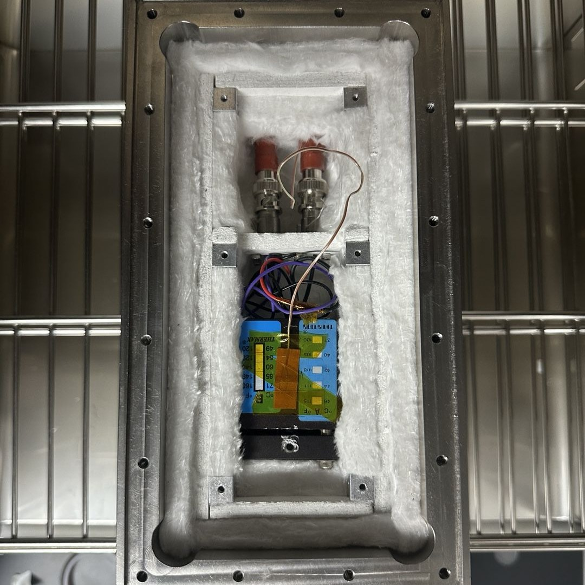
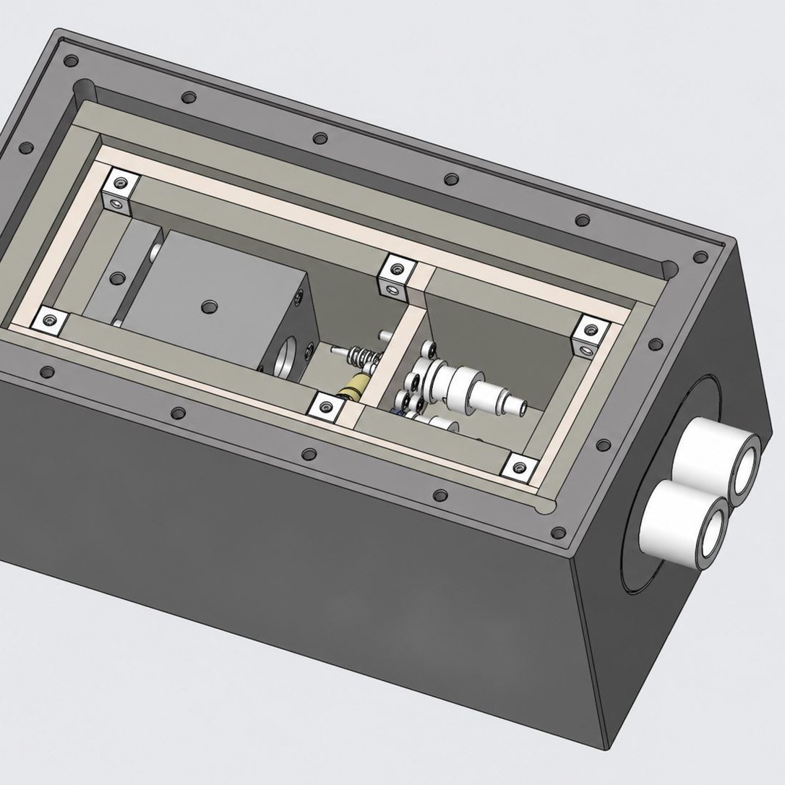
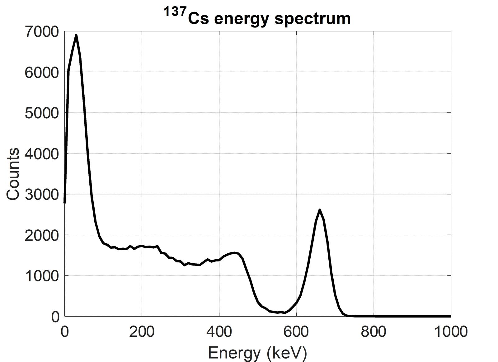
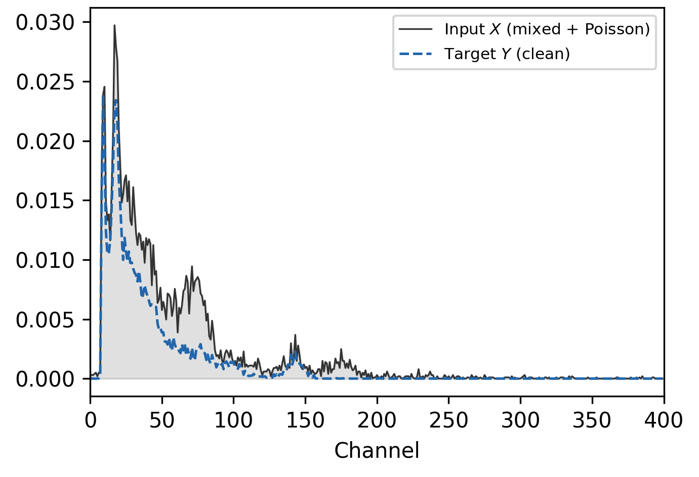
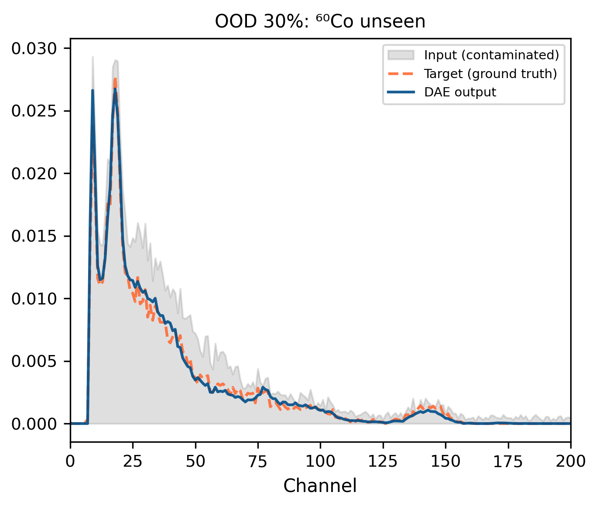
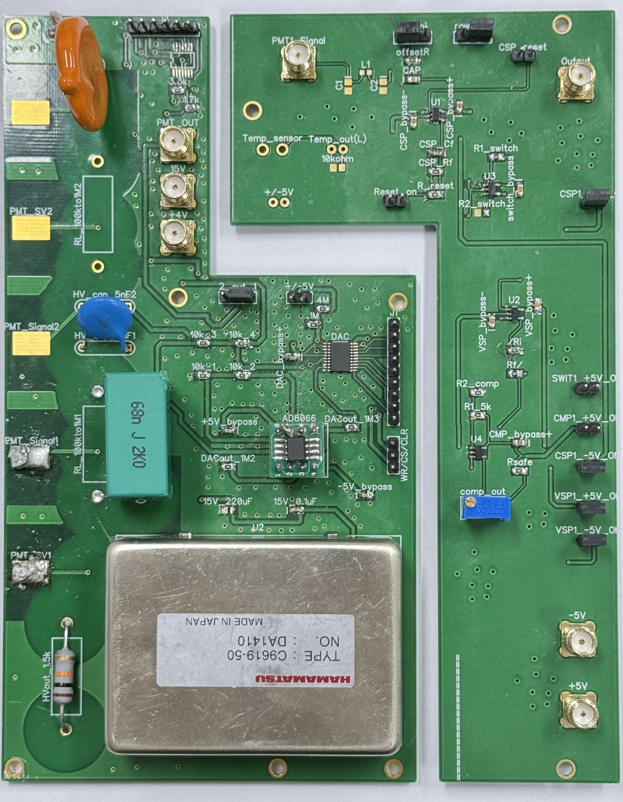

Research
Research along one measurement chain, from crystal to estimate.
Detectors for extreme environments
Detectors that keep working at high temperature and high gamma dose: a Ce:GPS scintillator and photomultiplier tube in an insulated enclosure, with the electronics outside.
- 2021Radiation resistance and temperature dependence of Ce:GPS scintillation crystal
- 2021A review of inorganic scintillation crystals for extreme environments


Deep learning on spectra
Estimating which radionuclides are present, and in what proportion, from gamma-ray spectra, even when temperature drifts or unseen nuclides appear.
- 2026
A denoising autoencoder for dual-target radionuclide quantification robust to unseen contamination and high background - 2025Deep learning-based radioisotope quantification for extreme environments




Readout electronics
Charge-reset preamplifiers for high count rates, SiPM multiplexing with capacitance compensation, and FPGA acquisition with digital pulse processing.
- 2025Development of charge reset multiplexing for SiPMs using deep learning architecture
- 2020Experimental results on a detector capacitance compensation technique for multiplexing SiPM channels
Radiation-hardened circuits
Radiation-hardened-by-design integrated circuits, adaptive analog and digital circuits, and embedded systems that tolerate radiation.
Scintillators and simulation
Light output against temperature and dose for Ce:GPS, GAGG and organic scintillators, and Geant4 and MCNP modeling of shielding and absorbed dose.